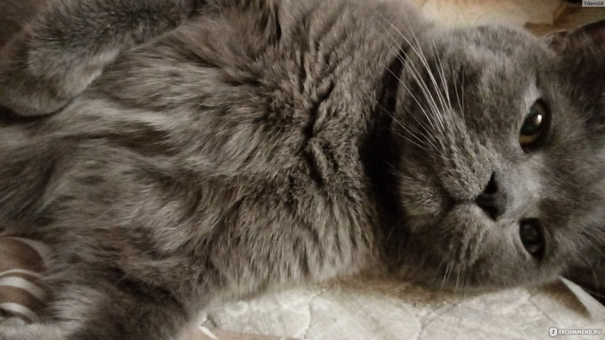

Здесь вы найдете много интересной информации о разных породах, уходе и поведении этих милых животных.
Котики - это домашние животные, которые живут с человеком уже тысячи лет. Они обладают развитым интеллектом, характером и индивидуальностью. Котики могут быть разных цветов, размеров и форм. Некоторые из них имеют длинную шерсть, а другие - короткую. Есть котики с кудрявой шерстью, а есть с гладкой. Есть котики с большими ушами, а есть с маленькими. Есть котики с круглыми глазами, а есть с косыми. Есть котики с длинным хвостом, а есть с коротким. Есть котики с пушистым хвостом, а есть с тонким.
Котики могут быть очень разными, но все они заслуживают любви и заботы. Котики - это лучшие друзья человека!